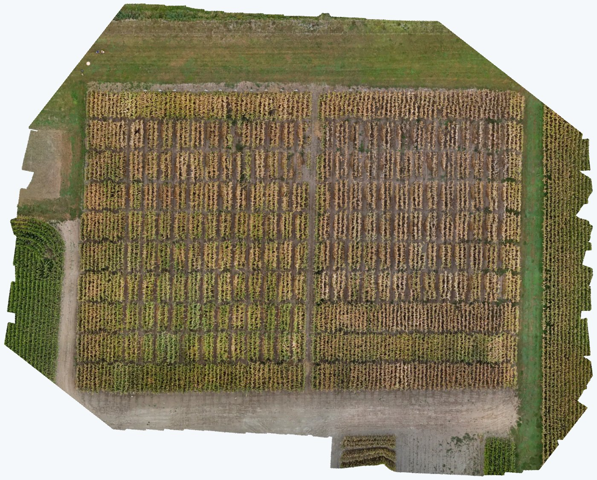
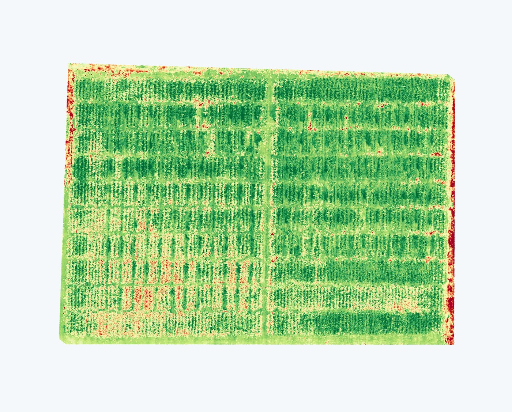

Crop & agriculture — VARI mapping & plant counting
Know your field, plant by plant.
One drone pass over the paddock hands you two things: a VARI health map that shows where the crop is thriving or struggling, and an exact plant tally — every plant counted and density worked out per field, using counting software we built in-house.
Deliver What you get
- Exact plant count & density — our counting software detects and tallies every plant: total per field, plants per hectare, and per management zone.
- VARI health maps — a vegetation-index map banded red / amber / green so weak patches stand out at a glance.
- Gap & emergence maps — skips, thin strips and hoppers located on the map, not guessed from a walk-the-paddock sample.
- Maps you can use — print-ready PDFs plus image files for your agronomist, planter setup or shed wall.
Spot What it shows you
- Uneven establishment — compaction, sowing depth, slugs or birds taking out strips of rows.
- Population vs target — how many plants actually made it, zone by zone, before harvest or silage.
- Stress before it’s obvious — nutrient or water shortfalls show on the index map before they show across the paddock.
- Storm, frost & traffic damage — hail, frost or pugging documented objectively across the whole field.
Real data from a real field
A maize crop field we flew — the true-colour orthomosaic and the VARI health map are the same flight processed two ways. Drag the handle to flip between them.


- 01 · Fly
A grid pass in true colour
Overlapping photos flown in a lawn-mower grid until every square metre of the field is covered.
- 02 · Build
One seamless map
Photos stitched into a single orthomosaic — the whole field in one image, sharp enough to pick out individual plants.
- 03 · Index
VARI health bands
The vegetation index turns the map red / amber / green by crop vigour, so problem zones are obvious in seconds.
- 04 · Count
Every plant tallied
Our in-house software detects and counts each plant — totals, density and gaps delivered in a report, not a sample.
Arable & broad-acre growers
Population and crop vigour before harvest or silage — count what you’re actually bringing off the field.
Agronomists & crop consultants
Zone-by-zone evidence for sampling plans and client reports, with maps to mark up and revisit.
Orchard & vineyard managers
Missing vine or tree inventories and replant lists, counted from the air instead of on foot.
Farm managers & insurers
Hail, frost or animal damage documented field-wide — objective before-and-after evidence.
Same trip as your solar inspection?
If the shed or house array is due for a thermal survey, we can pair it with the field flight — one visit, two reports.
See solar inspectionsWant more from the flight?
The same pass can feed orthomosaics, boundary maps and 3D site models for the rest of the farm.
Drone servicesBook a crop-health & plant-count flight
Based in Hamilton; travel quoted for Waikato, Bay of Plenty and the wider North Island.